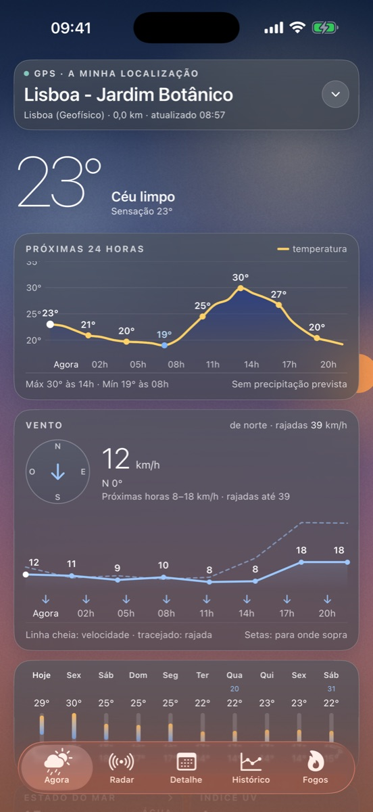
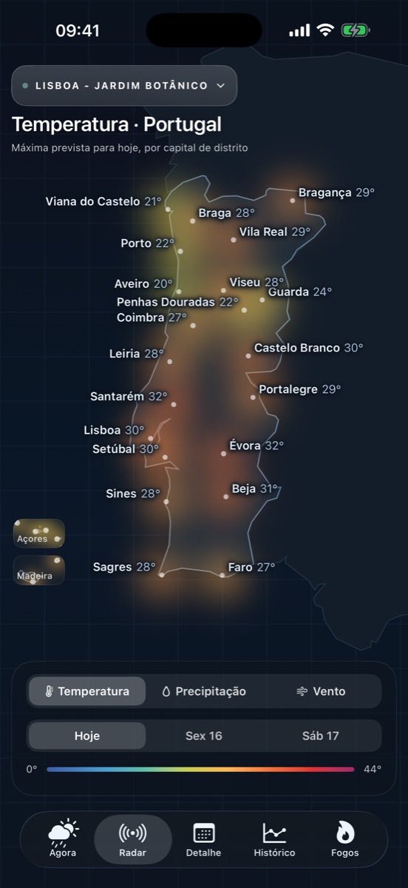
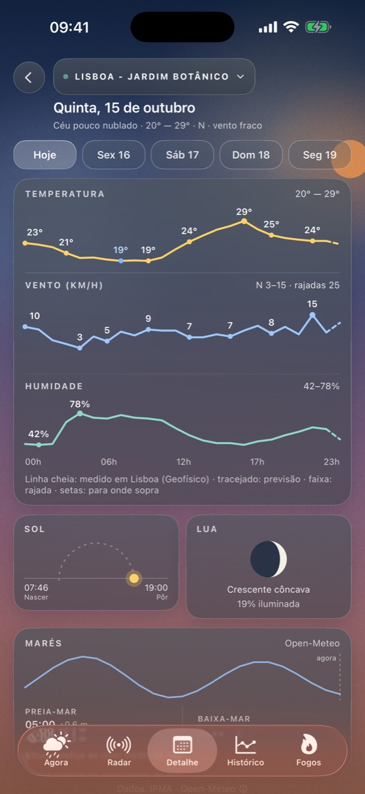
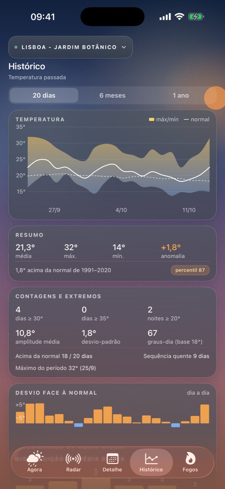
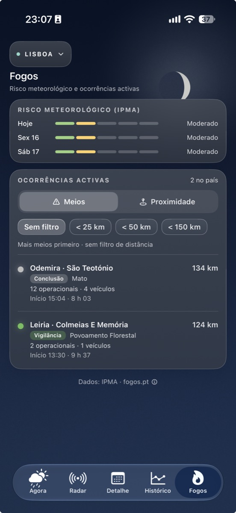

Previsão para o seu concelho, avisos, radar, risco de incêndio e fogos ativos — e o histórico para saber se está mesmo mais calor do que é costume.





Dados abertos do Instituto Português do Mar e da Atmosfera, para o seu concelho: hora a hora e para 10 dias.
Amarelo, laranja e vermelho, com as cores e os níveis oficiais do IPMA para a sua região.
Risco de incêndio (RCM) para os próximos dias e as ocorrências ativas em tempo real através do fogos.pt.
Temperaturas dos últimos 20 dias, 6 meses ou 1 ano, comparadas com a normal climática de 1991–2020.
Temperatura, precipitação e vento para o continente, Açores e Madeira.
Estado do mar, temperatura da água, marés e índice UV. E widgets para o ecrã principal.